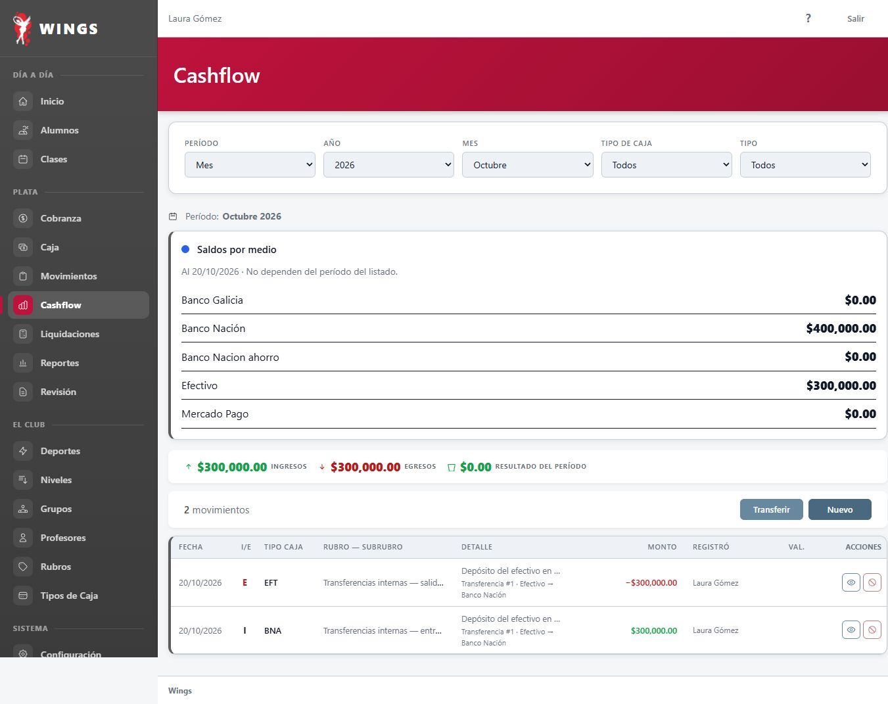
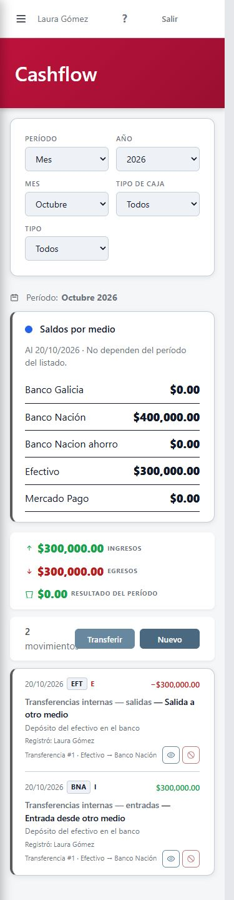
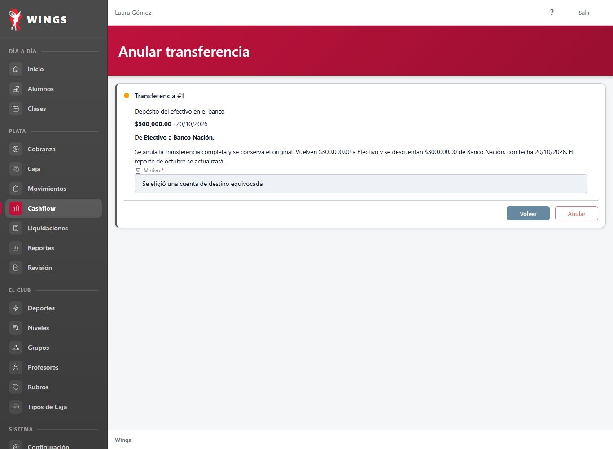
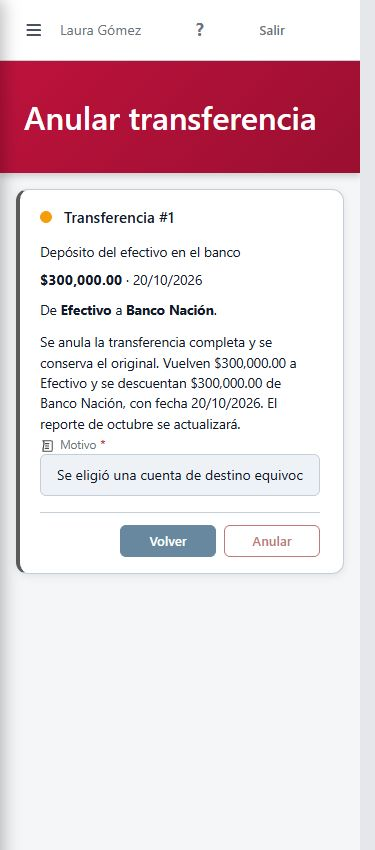
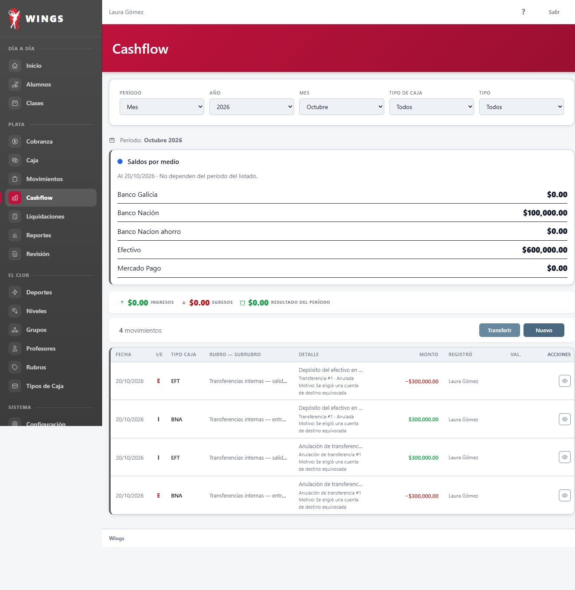
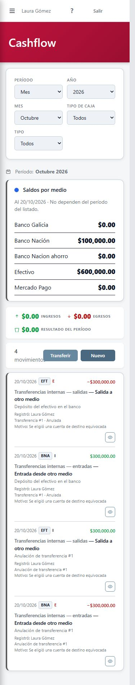

Propuesta para aprobar el aspecto. Capturas del HTML de Wings con sus componentes reales; solo se reemplazaron las partes propuestas. La anulación aún no está implementada. El ejemplo usa datos ficticios y no opera el sitio de prueba.
Desde cualquiera de las dos filas se llega a la misma confirmación. Se pide motivo, se conservan los originales y aparecen las dos anulaciones relacionadas. Las filas anuladas y sus contraasientos quedan solo con Ver.
| Ejemplo | Efectivo | Banco Nación |
|---|---|---|
| Antes | $600.000 | $100.000 |
| Transferencia de $300.000 | $300.000 | $400.000 |
| Después de anular (propuesto) | $600.000 | $100.000 |
Escritorio: 1366 de ancho. Celular: HTML dentro de un marco de 375; no es una ventana recortada. Abrí cada imagen para verla en tamaño original.






El estado final se armó como escenario visual. No acredita las reglas financieras, los filtros ni la concurrencia: se comprobarán al implementar. La decisión de T106 sobre si las transferencias cuentan en las tarjetas sigue aparte.
Control del método: login real dentro del marco de 375 · Informe y pendientes